第四十二章 级差地租II——第二种情况：生产价格下降
当追加投资的生产率不变、降低或提高时，生产价格都可能下降。
I. 追加投资的生产率不变
这个情况假定：各级土地的产量，会按照土地的质量，随着投在土地上的资本的增加而按同一程度增加。这意味着：在各级土地的差别不变时，超额产品按投资增加的比例而增加。所以，这个情况排除了A级土地上任何一个会影响级差地租的追加投资。A级土地的超额利润率＝0；因此，它现在仍然＝0，因为已经假定，追加资本的生产力不变，因而超额利润率也不变。
在这些假定的条件下，起调节作用的生产价格所以能够下跌，只是因为起调节作用的已经不是A级土地的生产价格，而是较好一级的B级土地的生产价格，或任何一种比A好的土地的生产价格；这样，资本就会从A级土地上抽出，或者，如果是C级土地的生产价格起调节作用，因而一切较坏土地都从种植小麦的土地的竞争中退出来，资本就会从A和B两级土地上抽出。在上述的假定下，做到这一点的条件是，追加投资的追加产品足以满足需要，以致较坏土地A等等的产品对于保证供给已经成为多余。
我们拿表II来说，但假定满足需要所需的是18夸特，而不是20夸特。这时，A会退出；B和它的每夸特30先令的生产价格将起调节作用。因此，级差地租会取得如下的形式：
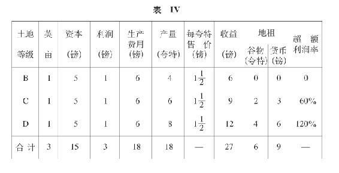
因此，和表II相比，总地租已经由36镑减少到9镑，谷物地租也已经由12夸特减少到6夸特；总产量只减少2夸特，由20夸特减少到18夸特。按资本计算的超额利润率，却已经下降到原来的三分之一，由180%减少到60%。所以在这个场合，随着生产价格的下降，谷物地租和货币地租也会减少。
和表I相比，只是货币地租减少了；谷物地租在两个场合都是6夸特；不过在一个场合＝18镑，在另一个场合＝9镑。对C级土地来说，谷物地租和表I相比是一样的。事实上，通过作用相等的追加资本所完成的追加生产，A的产品被排除出市场，因而A级土地被排除出竞争的生产要素之列，一个新的级差地租I已经形成，在这种地租上，较好的B级土地起着从前较坏的A级土地所起的同一作用。因此，一方面，B的地租没有了；另一方面，按照假定，B、C和D之间的差额不会因为投入追加资本而发生变化。因此，转化为地租的产品部分就减少了。
如果出现上述结果——即把A级土地除外，仍能满足需求——，是因为投在C或D或这两级土地上的资本已经增加一倍以上，那么，情形就会不同。例如，如果在C上面有了第三次投资，我们就会得到下表：
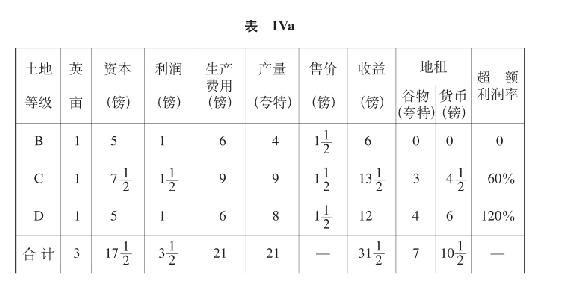
和表IV相比，在这里，C的产量由6夸特增加到9夸特，超额产品由2夸特增加到3夸特，货币地租由3镑增加到4(1/2)镑。但同表II（在那里，C的货币地租是12镑）和表I（在那里，C的货币地租是6镑）相比，C的货币地租已经下降。谷物地租总额＝7夸特，和表II（12夸特）相比已经下降，但和表I（6夸特）相比已经增加；货币地租总额（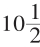镑）和两表（18镑和36镑）相比都已经下降。
如果第三次投资中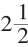镑是投在B级土地上，那么，生产量固然会发生变化，但地租不受影响，因为按照假定，各个连续的投资不会在同级土地上造成任何差额，并且B级土地不会提供任何地租。
相反，假定第三次投资是投在D级土地上，而不是投在C级土地上，我们就会得到下表：
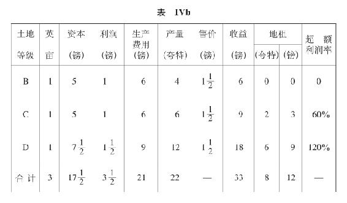
在这里，总产量是22夸特，比表I增加一倍还多，虽然预付资本只是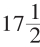镑比10镑，增加还不到一倍。和表II相比，总产量多2夸特，虽然表II的预付资本更大，是20镑。
和表I相比，D级土地的谷物地租已经由3夸特增加到6夸特，货币地租仍旧不变，还是9镑。和表II相比，D级土地的谷物地租仍旧是6夸特，但货币地租由18镑减少到9镑。
再说总地租，表IVb的谷物地租＝8夸特，比表I的6夸特多，也比表IVa的7夸特多，但比表II的12夸特少。表IVb的货币地租＝12镑，比表IVa的10(1/2)镑多，比表I的18镑少，也比表II的36镑少。
在表IVb的各种条件下，在B没有地租后，要使地租总额仍然和表I的地租总额相等，我们必须再有6镑的超额利润，也就是必须再有4夸特，每夸特的新的生产价格是1(1/2)镑。这样，我们就会又有一个18镑的地租总额，和表I相同。为此所需要的追加资本的量，要看我们是把这个资本投在C上还是投在D上，还是分开投在这两种土地上而有所不同。
对C来说，5镑资本会提供2夸特的超额产品，所以10镑追加资本将会提供4夸特的追加超额产品。对D来说，5镑的追加额，在追加投资的生产率不变这一在这里作为基础的前提下，已经足够生产4夸特的追加谷物地租。由此，我们可以得出如下的结果。
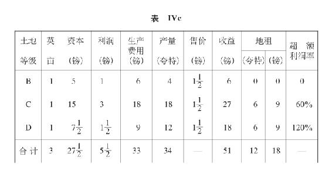
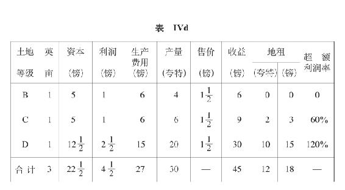
货币地租总额恰好是表II（在那里，追加资本是在生产价格不变的条件下投入的）的货币地租总额的一半。
最重要的是，把以上二表和表I相比。
我们看到，当生产价格下降一半，由每夸特60先令跌到30先令时，货币地租总额不变，仍旧是18镑，谷物地租则相应地增加一倍，由6夸特增加到12夸特。B的地租没有了；C的货币地租在表IVc增加一半，在表IVd则减少一半；D的货币地租在表IVc仍旧＝9镑，在表IVd则由9镑增加到15镑。产量已经由10夸特增加到表IVc的34夸特和表IVd的30夸特；利润已经由2镑增加到表IVc的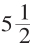镑和表IVd的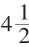镑。总投资在一个场合由10镑增加到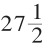镑，在另一场合由10镑增加到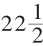镑，所以在这两个场合都增加一倍以上。地租率，即按预付资本计算的地租，对每级土地来说，在从表IV到表IVd的所有的表上都是一样。这一点已经包含在如下假定中：每一级土地上两个连续投资的生产率不变。但是，和表I相比，无论就所有各级土地的平均情况来说，还是就每级土地的个别情况来说，地租率都已经下降。在表I，地租率平均＝180%，而在表IVc，平均＝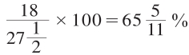，在表IVd，平均＝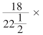100＝80%。每英亩的平均货币地租已经增加。它的平均数以前在表I是按全部4英亩计算，每英亩4(1/2)镑，现在在表IVc和表IVd，按3英亩计算，每英亩6镑。按提供地租的土地计算，货币地租的平均数以前是每英亩6镑，现在是每英亩9镑。所以每英亩地租的货币价值已经提高，并且现在代表比以前多一倍的谷物产品；但是现在12夸特谷物地租还不到总产量34夸特或30夸特的一半，而在表I，6夸特已经代表总产量10夸特的3/5。所以，地租作为总产量的一部分来看虽然已经减少，按所投资本计算，也已经减少，但它的货币价值按每英亩计算已经增加，它的产品价值增加得更多。我们拿表IVd中的D级土地来说，这里生产费用＝15镑，其中所投资本＝12(1/2)镑。货币地租＝15镑。在表I，同一个D级土地的生产费用＝3镑，所投资本＝2(1/2)镑，货币地租＝9镑，后者等于生产费用的三倍，几乎等于资本的四倍。在表IVd，D的货币地租是15镑，恰好与生产费用相等，只比资本大1/5。不过每英亩的货币地租已经大2/3，不是9镑，而是15镑。在表I，3夸特的谷物地租＝总产量4夸特的3/4；在表IVd，谷物地租是10夸特，等于D级土地一英亩的总产量（20夸特）的一半。由此可见，每英亩地租的货币价值和谷物价值能够增加，虽然它只形成总收益中变小的一部分，和预付资本相比也已经减少。
表I的总产量的价值＝30镑，地租＝18镑，超过总产量的价值的一半。表IVd的总产量的价值＝45镑，其中地租是18镑，不到总产量的价值的一半。尽管每夸特的价格下降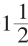镑即50%，尽管参加竞争的土地由4英亩减少到3英亩，但总货币地租却仍然保持不变，而谷物地租还增加一倍，按每英亩计算的谷物地租和货币地租也都增加，其原因就在于已经生产出更多夸特的超额产品。谷物价格下跌50%，超额产品增加100%。但是，要得到这个结果，在我们现在假定的条件下，总产量必须增加两倍，较好土地上的投资也必须增加一倍以上。较好土地上的投资必须按怎样的比例增加，首先取决于追加投资在较好土地和最好土地之间是怎样分配的；这里总是假定，资本在每级土地上的生产率，都会同资本量成比例地增加。
如果生产价格下降的程度较小，产生同额货币地租所需要的追加资本就会较少。如果要把A从耕地中排挤出去所必需的供给——这不只取决于A每英亩的产量，而且也取决于A在全部耕地面积中所占的比例——已经更大了，因而比A好的各级土地所必需的追加资本量已经更大了，在其他条件不变的情况下，货币地租和谷物地租就会增加得更多，虽然二者在B级土地上都已不复存在。
如果从A级土地抽出的资本＝5镑，那么要在这里加以比较的两个表就是表II和表IVd。总产量已经由20夸特增加到30夸特。货币地租却只有一半，是18镑而不是36镑；谷物地租仍旧不变＝12夸特。
如果在D级土地上44夸特的总产量＝66镑可以用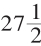镑资本生产出来——按照D原有的比率计算，每个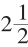镑的资本都有产品4夸特——，那么，地租总额就会重新达到表II的水平，并且表的形式如下：
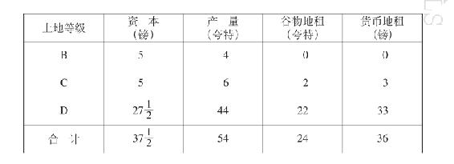
这里的总产量是54夸特，表II的总产量却是20夸特；货币地租仍旧一样，＝36镑。但这里的总资本是37(1/2)镑，而表II是20镑。全部预付资本几乎增加一倍，产量几乎增加两倍；谷物地租已经增加一倍，但货币地租仍旧不变。所以，如果价格在生产率不变的情况下由于在提供地租的较好土地（即一切比A好的土地）上投入追加的货币资本而下降，总资本就会有一种不是同产量和谷物地租按同一比例增加的趋势；因此，价格下降所引起的货币地租的损失，又可以由谷物地租的增加得到补偿。这一规律也表现在下面一点上：如果预付资本投在C上的比投在D上的多，也就是说，投在提供地租较少的土地上的，比投在提供地租较多的土地上的多，预付资本就必须相应地增多。简单说来就是，为了使货币地租保持不变或增加，必须生产出超额产品的一定的追加额；为此所需的资本，在提供超额产品的土地的肥力越大时，将越小。如果B和C之间，C和D之间的差额更大，所需的追加资本就会更小。这个一定的比例，第一，要取决于价格下降的比例，即现在不提供地租的土地B和以前不提供地租的土地A之间的差额；第二，取决于B以上各级较好土地之间的差额的比例；第三，取决于新投入的追加资本的量；第四，取决于这个追加资本在各级土地上的分配。
事实上，我们知道，这个规律所表示的，不过是在谈第一种情况时已经阐明的事情：生产价格已定时，不管它的量是多少，地租都会因追加投资而增加。这是因为，由于A已被排挤出去，现在就有了一个新的级差地租I，它以B为最坏土地，以每夸特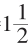镑为新的生产价格。这适用于表IV，也适用于表II。规律是一样的，只是现在作为出发点的不是土地A，而是土地B，不是3镑的生产价格，而是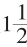镑的生产价格。
这里重要的一点只是：既然需要有若干追加资本，才能使资本从土地A抽出，并使供给在没有A的情况下也能得到满足，这就表明，在这种情况发生的同时，每英亩的地租可以仍旧不变、增加或减少，即使不是在所有土地上都是这样，至少在某些土地上和就已耕地的平均情况来说是这样。我们已经看到，谷物地租和货币地租的变动是不均衡的。只是由于传统，谷物地租在经济学上才仍然具有某种作用。我们同样也可以举出这样的情况：比如说，一个工厂主现在用他5镑的利润买到的棉纱可以比以前用他10镑的利润买到的棉纱多得多。不过，这无论如何已经说明，地主老爷们如果同时又是制造厂、制糖厂、酿酒厂等等的厂主或股东，在货币地租下降的时候，他们作为本人所需的原料的生产者，仍然可以获得很大的利益。(1)
(1) 以上IVa至IVd各表由于包含一个贯串全部的计算上的错误而必须重新计算。这诚然不会影响这些表所阐明的理论观点，但关于每英亩的产量，这些表部分地包含着十分畸形的数值。这其实也是无关紧要的。在一切立体地形图和纵剖面地形图上，人们采用的垂直比例尺度总是显著地大于水平比例尺度。不过，如果有人觉得他的农民感情由此受到损害，他尽可以用任何他认为合适的数字，去乘英亩数。在表I，我们可以用每英亩10蒲式耳、12蒲式耳、14蒲式耳、16蒲式耳（8蒲式耳＝1夸特）来代替每英亩1夸特、2夸特、3夸特、4夸特。由此推出的其他各表的数字，仍然在概率的范围内；我们将会发现，其结果，即地租的增加和资本的增加之比，将会完全一样。下章由编者加进的各表就是这样编制的。——弗·恩·
II. 追加资本的生产率降低
这个情况不会引出什么新的东西，只要在这里假定，同刚才考察过的情况一样，生产价格所以能够下降只是因为追加资本投在比A好的土地上，A的产品已经变为多余，因而资本已经从A抽出，或A已经用在别种产品的生产上。这种情况已经在上面详细论述过了。已经指出，在相同的情况下，每英亩的谷物地租和货币地租可以增加、减少或者不变。
为了便于比较，我们先把表I抄在下面：
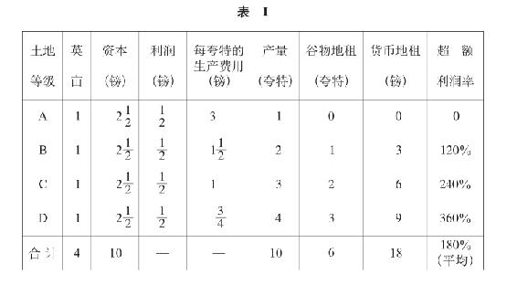
现在我们假定B、C、D在生产率降低时提供的16夸特，已经足以把A从耕地中排挤出去，表III就会变成下表：
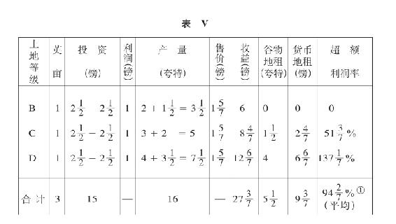
这里，追加资本的生产率降低，但各级土地上的降低额不等，同时起调节作用的生产价格由3镑下降到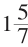镑。投资增加了一半，由10镑增加到15镑。货币地租差不多降低一半，由18镑降到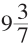镑，谷物地租却只减少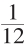，由6夸特减少到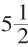夸特。总产量由10夸特增加到16夸特，增加了60%。谷物地租占总产量三分之一强。预付资本和货币地租之比为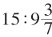，以前为10∶18。
III. 追加资本的生产率提高
这个情况和本章开头论述的变例I——生产价格在生产率不变时下跌——的区别只是在于：当需要一定数量的追加产品把A级土地排挤出去时，这种情况在这里可以更快地发生。
在追加投资的生产率降低和提高的场合，追加投资都会依照它们在各级土地间的分配情况而产生不同的影响。随着这种不同影响使差额减缓或扩大，各级较好土地的级差地租，从而地租总额，也将会按比例减少或增加，这和级差地租I中已经看到的情形一样。此外，一切取决于和A一起被排挤掉的土地面积和资本的数量，以及在生产率提高时为提供追加产品以满足需求所必需的预付资本的相对量。
在这里，只有一点值得我们研究，而且实际上也是这一点使我们回过头来研究这个级差利润是如何转化为级差地租的，这就是：
在第一种情况即生产价格不变的情况中，投在A级土地上的追加资本和级差地租本身无关，因为A级土地仍旧不提供地租，它的产品的价格不变，并且继续起调节市场的作用。
在第二种情况的变例I（生产价格在生产率不变时下跌）中，A级土地必然会被排挤掉，在变例II（生产价格在生产率降低时下跌）中更是这样；因为，否则A级土地的追加投资必然会提高生产价格。但在这里，在第二种情况的变例III（生产价格因追加资本的生产率提高而下跌）中，这个追加资本在一定情况下可以投在A级土地上，也可以投在各级较好土地上。
我们假定，投在A上的追加资本2(1/2)镑，不是生产1夸特，而是生产1(1/5)夸特。
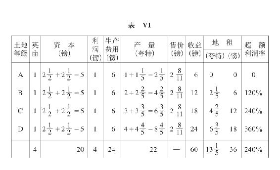
这个表，除了要和基本的表I相比较，也要和表II（在那里，投资加倍，生产率不变，生产成果和投资成比例）相比较。
按照假定，起调节作用的生产价格下降了。如果它不变，还是＝3镑，那么，以前仅投资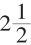镑时不提供任何地租的最坏土地A，现在也就会提供地租了，尽管并没有更坏的土地被人耕种；而这是因为同一土地的生产率已经增加，但只是对资本的一部分来说是这样，对原有资本这是不适用的。第一个3镑的生产费用生产1夸特；第二个3镑的生产费用生产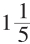夸特；但全部产品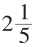夸特现在是按照它的平均价格出售的。因为生产率随着追加投资而增加，所以这必然包含着某种改良。这可以是这样：一般地说，在每英亩上使用更多的资本（更多的肥料，更多的使用机械的劳动等等）。也可以是这样：一般地说，只是由于这个追加资本，才有可能实现一个质上不同的、生产效率更大的投资。在这两个场合，都是每英亩花费5镑资本，得到2(1/5)夸特的产量，而用这个资本的一半即2(1/2)镑，那就只会得到1夸特的产量。把暂时的市场状况撇开不说，只有在A级土地的相当大的面积上继续只用每英亩2(1/2)镑/的资本来耕种，A级土地的产品才能继续按较高的生产价格，而不是按新的平均价格出售。但是，每英亩投资5镑的新比例以及改良的经营方法一旦普遍实行，起调节作用的生产价格就必然会下降到2(8/11)镑。这两个资本部分之间的差别就会消失，于是A级土地一英亩如果仍只用2(1/2)镑来耕种，事实上就是非正常的，是与新的生产条件不相适应的。这时，问题不再是同一英亩上的资本不同部分的收益的差别，而是每英亩总投资是充足还是不充足的差别。由此可以看出，第一，相当多租地农场主（必须是相当多，因为如果人数少，他们就只得被迫低于他们的生产价格出售）手中的不充足的资本，同各级土地本身在下降序列中存在的差别，起着完全相同的作用。较坏土地的低劣耕种，将会使较好土地的地租增加；它甚至会在质地同样坏但耕作已改良的土地上创造出地租，而这种土地往常是不会提供地租的。第二，我们看到，级差地租在它是由同一个总面积上的连续投资产生时，实际上会化成一个平均数，在这个平均数上，不同投资的作用已经不再能够辨认和区别，因此不会在最坏土地上生出地租；而是第一，它们会使比如说A级土地一英亩总收获的平均价格，成为新的起调节作用的价格；第二，它们会表现为新条件下充分耕种土地所必要的每英亩资本总量的变动，并且在资本总量中，各个连续投资及其各自的作用已经不可区分地混在一起。较好土地的个别的级差地租也是这样。总之，在增大的投资现在已成为标准的条件下，在每个场合，级差地租都是由该级土地提供的平均产量同最坏土地的产量相比而形成的差额决定的。
没有一块土地是不用投资就提供产品的。甚至就简单的级差地租即级差地租I来说，也是这样；我们说一英亩A级土地即调节生产价格的土地会按某种价格提供若干产品，较好的B、C、D级土地会提供若干级差产品，因而在那个起调节作用的价格下会提供若干货币地租，这时，我们总是假定，这里投入的是现有生产条件下已被看做标准的一定资本额。正如在工业中一样，每个营业部门都必须有一定的最低限额的资本，才可以按照商品的生产价格来生产商品。
如果由于在同一土地上有了和各种改良结合在一起的、连续的投资，这个最低限额发生了变化，那么，这也是逐渐发生的。例如，在A级土地还有一定的英亩数尚未取得这种追加的经营资本时，由于生产价格不变，A级土地中那些耕种得比较好的英亩就会产生出地租，一切较好土地如B、C、D的地租也会提高。但新的经营方法一旦普及，成为标准的经营方法，生产价格就会下降；较好土地的地租就会再下降，而尚未具有现在的平均经营资本的那部分A级土地，就只好低于它的个别生产价格，因而低于平均利润出售它的产品。
在生产价格下跌时，这种情况甚至在追加资本的生产率降低的时候也会发生，只要所需的总产量，由于投资的增加，已经可以由较好土地来提供，从而，例如，经营资本从A级土地上抽出，也就是说，A级土地不再参加这种产品（例如小麦）的生产上的竞争。现在平均投在新的起调节作用的较好的B级土地上的资本量就成为标准；当我们说土地的不同肥力时，也是假定每英亩使用了这种新的标准的资本量。
另一方面，很清楚，这种平均投资，例如英国1848年以前每英亩8镑，1848年以后每英亩12镑，在缔结租约时会当做标准。对投资超过标准的租地农场主来说，超额利润在租约有效期间是不会转化为地租的。租约满期后，它会不会转化为地租，取决于那些能够进行同样的额外投资的租地农场主的竞争。这里不谈那种永久性的、在资本支出相等甚至减少时也能继续保证产量增加的土地改良。这种改良虽然是资本的产物，但起着和土地性质的自然差异完全相同的作用。
因此，我们知道，在级差地租II中，有一个因素必须加以考虑，这个因素在级差地租I本身中没有表现出来，因为不管每英亩标准投资额有怎样的变动，级差地租I都可以继续存在下去。这个因素，一方面，在于起调节作用的A级土地上的各个投资的各个结果变得模糊不清；A级土地的产量，现在不过表现为每英亩的标准平均产量。另一方面，在于每英亩投资的标准最低限额或平均量发生变动，以致这种变动表现为土地的特性。最后，在于超额利润转化为地租形式的方式有了差别。
其次，同表I及表II相比，表VI现在表明，谷物地租比表I增加一倍以上，比表II增加1(1/5)夸特；货币地租和表I相比，增加一倍，和表II相比，却没有变化。如果（在其他各种假定相同的条件下）追加资本有更大的部分投在较好的各级土地上，另一方面也就是说，如果追加资本在A级土地上所发生的作用减少，以致A级土地每夸特的起调节作用的平均价格提高，那么，货币地租就会显著增加。
如果资本追加所带来的肥力的提高在各级土地上发生不同的作用，那就会引起各级土地级差地租的变动。
无论如何已经证明，在生产价格因追加投资的生产率提高而下降时——也就是在这种生产率提高的比例大于资本预付增加的比例时——，每英亩的地租，例如在投资增加一倍时，不只是能够增加一倍，而且能够增加一倍以上。但是，如果生产价格因A级土地的生产率提高得更快而下降得更低，那么，每英亩的地租也可能下降。
例如我们假定B和C的追加投资不是和A的追加投资按相同的比例提高生产率，以致对B和C来说比例差额减少，产量的增加就弥补不了价格的下降，这样，和表II相比，D的地租将会增加，B和C的地租则会减少。
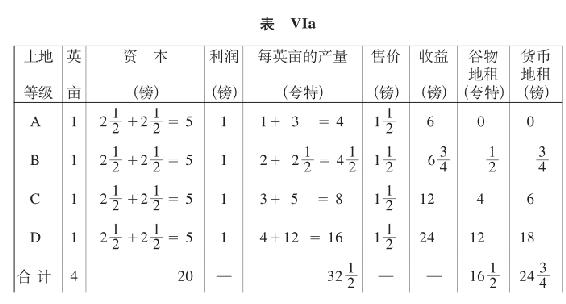
最后，如果在肥力按相同的比例增加的条件下，在较好土地上比在A级土地上投入更多的追加资本，或者，如果在较好土地上的各追加投资的生产率提高，那么，货币地租就会增加。在这两个场合，差额都会增加。
如果由追加投资引起的改良会全面或部分减少差额，并且对A的影响大于对B和C的影响，那么，货币地租就会下降。最好土地的生产率的增加越小，它就下降得越多。谷物地租是增加、下降还是不变，则取决于影响的不平衡的程度。
如果各级土地的追加肥力的比例差额不变，但在提供地租的土地上比在无租土地A上，在提供地租较多的土地上比在提供地租较少的土地上投入更多的资本，或者如果追加资本相等，但和A级土地相比，较好土地和最好土地上的肥力增加得更多，那么，货币地租就会提高，谷物地租也会提高，提高的程度同较高级土地上肥力增加超过较低级土地上肥力增加的程度成比例。
但是，在所有情况下，如果增长的生产力是资本增加的结果，不单纯是投资不变时肥力提高的结果，那么，地租就会相对地提高。这是绝对的观点，它表明，在这里和以前的所有情况一样，地租和每英亩的已经增加的地租（和级差地租I中就全部耕地面积计算的平均总地租的量一样），都是土地上投资增加的结果，而不管这种投资是在价格不变或下降时以不变的生产率发生作用，还是在价格不变或下降时以降低的生产率发生作用，还是在价格下降时以提高的生产率发生作用。因为，我们假定，价格在追加资本的生产率不变、降低或提高时不变，或价格在生产率不变、降低或提高时下降，而这个假定可以归结为这样的假定：价格不变或下降时追加资本的生产率不变，价格不变或下降时生产率降低，价格不变和下降时生产率提高。虽然在所有这一切场合，地租可以不变和下降，但在其他条件相同的情况下，如果资本的追加使用不是肥力增加的条件，地租就会下降得更厉害。因此，资本追加总是地租相对高昂的原因，虽然地租会绝对地下降。